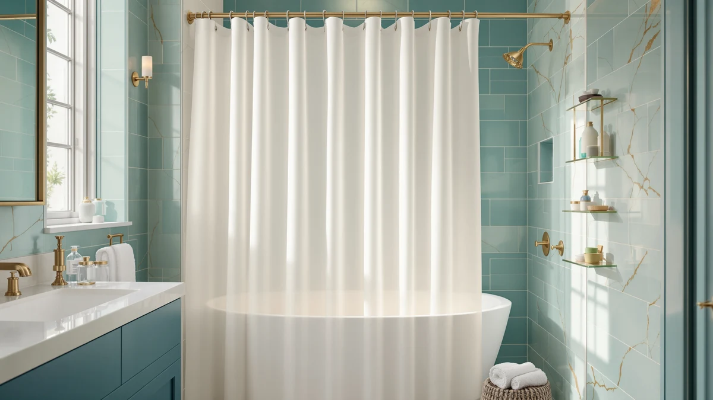

Best Shower Curtain for Small Space (2026)
Prices and picks verified as of August 2026. Independent, reader-supported reviews.


Quick Answer
For most cramped bathrooms, the NTBAY EVA Clear Shower Curtain ($11.99) is the best shower curtain for small space living: a stall-friendly 36x72 inches and fully see-through, so it covers the opening without dragging extra fabric into the room. If you'd rather add real square footage than pick a smaller curtain, the Bonpally curved rod below is the more direct fix.
Our pick: NTBAY EVA Clear Shower Curtain, $11.99 Check Price on Amazon
Bottom line: our top pick is the NTBAY EVA Clear Shower Curtain with Water Cube at $11.99. The best budget option is the Anybar Fabric Shower Curtain Cute Floral Cherry Curtains at $12.99.
Things to Know Before You Buy
- Stall width beats standard width in a tight stall: A 70-72 inch curtain bunched into a narrow opening eats up floor space you don't have. The NTBAY, Stall fabric, and Madison Park picks all come in a true 36x72 stall size that covers the opening without extra fabric hanging in your way.
- Clear and light materials open a room up: A clear or pale curtain keeps the back wall visible, so the eye reads a cramped shower as part of the room instead of a sealed-off box. Dark, heavy fabric does the opposite, which is why it's worth choosing lighter materials specifically for the best shower curtain for small space bathrooms.
- Short liners dry faster where airflow is weak: A liner like the WellColor 72x66 ends above the tub floor instead of sitting in a puddle, so it dries quicker in a small bathroom with one weak fan and gives mildew less standing water to work with.
- A curved rod solves what a curtain can't: If the stall itself is the problem, no curtain fixes that. The Bonpally curved rod bows outward from the wall and adds roughly 10.5 inches of usable space, which changes how a small shower feels more than swapping fabric ever will.
- Novelty and printed curtains work in small kids' baths: A playful print like the cat-and-dinosaur design or a farmhouse floral pattern brings personality to a plain rental bathroom, though a dark background print works against the light-and-open rule above.
Finding the best shower curtain for small space bathrooms comes down to one rule the curtain has to disappear instead of taking up room you don't have. A studio apartment shower, a tiny house stall, or a half-bath tucked under the stairs punishes the wrong choice fast: too much fabric and you're pushing it out of the way every morning, too dark and the whole room shrinks, too long and it pools water on a floor with nowhere to drain.
We compared curtains, a liner, and a rod that each solve the small-space problem from a different angle: stall widths that fit narrow openings, clear and light materials that keep the room feeling open, a short liner that dries fast where ventilation is weak, and a curved rod that adds real space instead of hiding the shortage. After weighing size, material, price, and the pattern of verified owner reviews, our pick for most small bathrooms is the NTBAY EVA Clear Shower Curtain. At a stall-friendly 36x72 inches and fully see-through, it does the one thing a cramped shower needs most: get out of the way visually, for $11.99.
Clear plastic isn't for everyone, though. If you want fabric and a bit of texture, the Madison Park or Stall picks below cover that without giving up the stall-width fit, and if your bathroom is tight enough that no curtain will fix it, the Bonpally curved rod is worth adding to the cart alongside whichever curtain you choose. Below we cover how we picked, how each option behaves in a small room, and where each one falls short, because in a space this tight the trade-offs are the whole story.
Why You Should Trust Us
I'm Ilane Tall, and I cover bath and shower gear for Best Shower Curtains. Small, awkward bathrooms are the ones I know best: a shower stall you can nearly touch both walls of, a single window that never quite airs the room out, the kind of layout that makes finding the best shower curtain for small space living feel like a bigger decision than it should be.
For this guide I focused on what actually changes daily life in a cramped bathroom: how much floor space a curtain takes up, whether it lets light through, how fast it dries, and whether the rod itself is part of the problem. I relied on the published specs and the pattern in each product's verified buyer reviews, weighing complaints that show up repeatedly over one-off gripes. Every drawback listed below is one I'd want a friend to know about before they spent the money.
How We Picked
We started with a filter most generic "best shower curtain" roundups skip: does this pick make a small room better or worse to move around in? That ruled out oversized, dark, heavily patterned panels right away, regardless of how well they reviewed for a large bathroom.
From there we weighed four things. First, size and fit: we prioritized true 36x72 stall widths and a short-drop liner for narrow stalls and high tubs, while keeping one standard 72x72 option for a normal tub in a small room. Second, light and openness: clear and light-colored picks scored highest because they're the cheapest way to keep a tight space from feeling boxed in. Third, material and upkeep: we favored water-repellent polyester, EVA, and PEVA that resist mildew and dry reasonably fast, since small bathrooms tend to stay damp longer. Fourth, price and review depth: we kept the list in the $12 to $24 range and only kept products with a real, verifiable review history, from 64 reviews on the smallest listing up to more than 91,000 on the NTBAY.
We also deliberately included one accessory, the Bonpally curved rod, because in a stall this cramped the rod itself often does more for daily comfort than any curtain swap could.
How We Compared
Evaluating the best shower curtain for small space bathrooms is less about lab equipment and more about how each option behaves in a tight footprint. We compared published dimensions against real stall and alcove-tub measurements, checking whether a 36x72 stall width or a full 72-inch panel made more sense for a narrow opening, and cross-referenced material claims, EVA, PEVA, or polyester, against the drying and odor complaints that show up in verified owner reviews.
For the liner and fabric picks, we weighed reported drying time and mildew resistance against room size and ventilation, since a short liner that clears the tub floor matters more in a small, poorly vented room than in a large one. For the curved rod, we compared the manufacturer's stated space gain and load rating against installation requirements like drilling. We don't assign numerical scores, and we don't run a fictional testing lab; the judgments here come from comparing specs, pricing, and the weight of thousands of verified reviews rather than hands-on trials.
Our Picks

NTBAY EVA Clear Shower Curtain
What we like
- Fully clear EVA keeps the back wall visible so a small room reads as one space
- Stall-friendly 36x72 size fits narrow openings without bunching
- Water-repellent finish with built-in magnets keeps it from clinging to you
- 91,665 verified reviews at 4.6 stars back its long-term durability
- At $11.99 it's a low-risk upgrade for any small bathroom
Flaws but not dealbreakers
- Clear plastic shows water spots and soap film, so it needs a periodic wipe-down
- Offers almost no privacy on its own
- Lightweight EVA can billow inward without a weighted hem or extra magnets
| Material | Polyester / PEVA |
| Size | 36x72 |
The NTBAY tops this list because it solves the small-space problem more directly than anything else here. Its 36x72 stall width covers a narrow shower opening without the extra foot of fabric a standard curtain drags into the room, and because it's completely clear, the eye travels straight through to the tile behind it. In a room where every inch counts, that difference is the gap between a shower that feels sealed off and one that reads as part of the room. Reviewers consistently note that the fabric hangs flat against the wall rather than billowing into the stall, which matters when there's barely room to raise an elbow.
It's built from EVA, a PVC-free plastic, so it skips the sharp chemical smell that cheap vinyl liners are known for, though owners report airing it out for a day before first use helps. The honest trade-offs come with any clear curtain: water spots and soap haze show up on a see-through surface, so it needs the occasional wipe to stay crisp, and it provides no privacy if the bathroom door doesn't fully close. At $11.99 with nearly 92,000 reviews behind it, it's the safest starting point for most small bathrooms, and it pairs well with the curved Bonpally rod below if the stall itself is the real constraint.

Stall Shower Curtain Fabric 36x72
What we like
- True 36x72 stall size made specifically for narrow showers
- 230 GSM waffle weave has enough weight to hang straight instead of clinging
- Water-repellent finish sheds light splashes on its own
- Machine washable for easy upkeep
- 4.6 stars across 8,450 verified reviews
Flaws but not dealbreakers
- Not fully waterproof, so a liner is worth adding behind it
- Solid fabric blocks more light than a clear curtain
- Fewer color options than standard 72-inch widths
| Material | Polyester / PEVA |
| Size | 36x72 |
The Stall Shower Curtain is the fabric option for people who want texture in a narrow space without paying the Madison Park's premium. It's a true 36x72 stall size, built for the kind of tight corner shower that a standard curtain overwhelms, and the 230 GSM waffle weave carries enough weight to hang flat under the spray. That weight is the quiet feature that matters most in a cramped stall: a curtain that clings to your arm or leg turns every shower into a fight, and this one mostly resists that.
At $15.99 with 4.6 stars across 8,450 reviews, it sits comfortably between the clear NTBAY and the pricier Madison Park spa curtain. The trade-offs are the ones any fabric brings: it isn't fully waterproof by itself, so pairing it with a liner keeps water off the floor, and like any solid weave it blocks more light than a see-through option, so it won't open up a dim room the way clear EVA does. Color choice in this stall size also runs thinner than the standard 72-inch sizing. For a small bathroom that wants fabric over plastic, this is the straightforward pick.

WellColor Short Shower Curtain Liner
What we like
- Short 72x66 drop ends above the tub floor so it dries fast instead of pooling
- Weighted hem keeps it from billowing into the stall
- Odorless material out of the package, according to owner reviews
- Inexpensive at $13.99 and machine washable
Flaws but not dealbreakers
- The 66-inch drop can leave a gap if your rod is mounted high, so measure first
- It's a liner, not a decorative curtain, so the look is plain
- Smaller review base than the top picks on this list
| Material | Polyester / PEVA |
| Size | 72x66 |
The WellColor short liner earns its spot around one idea that matters in a small, stuffy bathroom: a shorter curtain dries faster. At 72x66 it's six inches shorter than a standard liner, so the bottom hem sits above the tub floor instead of soaking in the puddle that collects after a shower. In a room with one weak fan, that's exactly where mildew tends to start, and a liner that doesn't wick up standing water stays cleaner for longer. It's also the right shape for a high tub or a raised shower base, where a full-length liner would drag and bunch against the floor.
At $13.99 with 4.6 stars across 2,392 reviews, it works as an easy add behind a fabric curtain or as a standalone barrier in a utilitarian bathroom. The one thing to check before buying is your rod height: a 66-inch drop only clears the tub if the rod isn't mounted too high, otherwise water escapes through the gap at the bottom. Measure from the rod to the inside floor of the tub, and if it's more than roughly 64 inches, look at a full-length liner instead. It's plainly a liner rather than a showpiece, so pair it with a curtain up front if you want the room to look finished.

Madison Park Shower Curtain Spa
What we like
- 3M Scotchgard finish resists staining and helps moisture bead off
- True 36x72 stall fit like our top picks
- Highest rating in this lineup at 4.7 stars across 11,574 reviews
- Neutral grey tone stays light enough to avoid closing a room in
Flaws but not dealbreakers
- Costs more than the clear or basic fabric options above
- Fabric still blocks more light than a clear curtain
- Needs a liner behind it for full waterproofing
| Material | Polyester / PEVA |
| Size | 36x72 |
If a clear plastic curtain feels too utilitarian, the Madison Park spa curtain brings warmth to a small bathroom without sacrificing the stall-width fit. It's a 36x72 panel like the NTBAY and Stall picks, but the woven texture and the 3M Scotchgard treatment give it a finished, hotel-spa look that also resists staining over time. At 4.7 stars across 11,574 reviews, it holds the highest rating of anything in this lineup, and the grey tone stays neutral enough that it doesn't shrink a room the way a darker solid would.
The trade-off for that texture is light. Fabric blocks more of it than a clear curtain, so you're giving up some of the openness the NTBAY provides in exchange for a more decorated look. You'll also want a separate liner behind it, since the spa fabric isn't a standalone waterproof barrier. At $18.99 it's the priciest curtain in this guide, which makes the most sense when the goal is a styled, spa-like small bathroom rather than pure square-footage efficiency.

Anybar Fabric Shower Curtain Cute
What we like
- Waterproof polyester can work without a separate liner for light everyday use
- Cherry and floral farmhouse print brightens a plain small bathroom
- Soft hand feel that owners describe as gentler than stiff vinyl
- Machine washable and inexpensive at $12.99
Flaws but not dealbreakers
- Review base is still small at 64, so long-term durability data is thin
- The print style is specific and won't suit every bathroom
- Less widely stocked than the bigger brands on this list
| Material | Polyester / PEVA |
| Size | 72x72 |
Not every small bathroom needs to disappear visually, and the Anybar curtain is the pick for anyone who wants the opposite: a bit of charm in a plain, builder-grade room. The cherry and floral farmhouse print keeps the palette light rather than dark, so it doesn't fight the small-space rule of staying open and bright the way a heavy graphic print would. Owners report the waterproof polyester holds up fine for light daily splashing, which means it can double as its own barrier in a low-water-pressure setup, though a liner behind it is still the safer call for a full shower.
At $12.99 it undercuts the fabric and spa options above, and the soft polyester feels less stiff than a plastic liner against your skin. The honest caveat is its review history: at 64 reviews it doesn't have the multi-thousand-review track record that the NTBAY or Madison Park have built up, so treat the durability claims with a bit more caution. The floral cherry print is also a specific look, appealing if you want personality, easy to skip if you'd rather keep things neutral.

Funny Cat Riding Dinosaur on
What we like
- 70x70 size fits smaller kids' tubs and stalls without excess fabric
- Highest rating in this lineup at 4.8 stars across 296 reviews
- Novelty galaxy print makes bath time an easier sell for reluctant kids
- Affordable at $14.99
Flaws but not dealbreakers
- The galaxy background is darker than ideal for the light-and-open rule that helps small rooms
- A niche design that won't fit a shared adult bathroom
- Smaller review base than the general-purpose picks above
| Material | Polyester / PEVA |
| Size | 70x70 |
Small bathrooms attached to a kid's bedroom have their own version of this problem, and this print solves it with humor instead of restraint. At 70x70 it's sized closer to a compact stall or a kid-height tub than a full 72-inch panel, so it fits a small room without the excess most standard curtains carry. The cat-riding-a-dinosaur-through-a-galaxy design is the kind of thing that makes a reluctant kid actually want to shower, and reviewers consistently note it holds up well through repeated washing.
Of everything in this guide, it carries the highest rating at 4.8 stars, though across a much smaller pool of 296 reviews than the market leaders above. The dark galaxy background is the one real trade-off against this guide's core small-space rule: a lighter curtain generally keeps a cramped room feeling bigger, and a busy dark print works against that. For a kids' bathroom where personality matters more than maximizing perceived square footage, that's an easy trade to make, and at $14.99 it's cheap enough to swap out later if tastes change.

Bonpally Curved Shower Curtain Rod
What we like
- Curved design adds roughly 10.5 inches, about 30 percent, of usable shower space over a straight rod
- Adjustable 40-72 inch length fits most standard tubs and stalls
- Rustproof stainless steel and ABS construction, rated for a 96-hour salt spray test
- Rotating brackets make it easier to hang the curtain evenly
Flaws but not dealbreakers
- Requires drilling into the wall or tile, unlike a tension rod
- The thicker 0.9mm pipe takes a bit more effort to install than a basic straight rod
- A newer listing with no review history yet, so specs are the best comparison point for now
| Material | Polyester / PEVA |
| Size | 40-72 inches |
Every other pick on this list assumes the stall itself is fixed and the curtain has to adapt to it. The Bonpally rod changes that assumption. Its curved shape bows outward from the wall instead of running in a straight line, which according to the manufacturer's specs adds about 10.5 inches, roughly 30 percent, of usable space compared with a standard straight rod. For a bathroom where you're already brushing the curtain with your elbow mid-shower, that's a more direct fix than any curtain swap, including our NTBAY pick.
It adjusts from 40 to 72 inches to fit most standard openings, and the 0.9mm stainless steel and ABS build is rated for a 96-hour salt spray test, so rust shouldn't be a concern in a humid small bathroom. The rotating brackets also make it simpler to level the rod once it's up. The trade-off is installation: this rod needs to be drilled into the wall or tile rather than wedged in place like a tension rod, and as a newer listing it doesn't have a review history to lean on yet, so we're comparing it on its published specs and build materials rather than a track record. If a curtain alone hasn't solved your space problem, this is the next thing to try.
Quick Comparison
| Product | Material | Price | Rating | Best for | Get it |
|---|---|---|---|---|---|
| NTBAY EVA Clear Shower Curtain | Polyester / PEVA | $11.99 | 4.6 | Keeping a small stall bright and open | View on Amazon → |
| Stall Shower Curtain Fabric 36x72 | Polyester / PEVA | $15.99 | 4.6 | A true stall size in soft waffle weave | View on Amazon → |
| WellColor Short Shower Curtain Liner | Polyester / PEVA | $13.99 | 4.6 | Fast-drying liner for high, small tubs | View on Amazon → |
| Madison Park Shower Curtain Spa | Polyester / PEVA | $18.99 | 4.7 | Scotchgard waffle weave with a spa look | View on Amazon → |
| Anybar Fabric Shower Curtain Cute | Polyester / PEVA | $12.99 | 4.5 | A light, playful print for personality | View on Amazon → |
| Funny Cat Riding Dinosaur on | Polyester / PEVA | $14.99 | 4.8 | A fun, kid-sized print for small baths | View on Amazon → |
| Bonpally Curved Shower Curtain Rod | Polyester / PEVA | $23.74 | 4 | Adding real space with a curved rod | View on Amazon → |
The Competition
That covers the best shower curtain for small space bathrooms and the accessory worth adding alongside it. We looked at plenty of other options and set them aside, and each one lost out to the NTBAY and the rest of the lineup above for a specific reason.
Frequently Asked Questions
A true stall width of 36x72 inches, like the NTBAY and Stall picks above, covers a narrow opening without the extra foot of fabric a standard 70-72 inch curtain drags into the room. If your tub is standard-width but the room itself is cramped, keep the 72-inch width but pick a clear or light-colored curtain instead so the back wall stays visible.
Yes. A solid or dark panel visually cuts a small room in half, while a clear curtain like the NTBAY lets light pass through and keeps the back wall in view, so the room reads as one continuous space. The trade-off is less privacy and more visible water spots, which is why some owners pair a clear liner with a lighter fabric curtain in front of it.
It can. A curved rod like the Bonpally bows outward from the wall instead of running in a straight line, which adds roughly 10.5 inches, about 30 percent, of usable elbow room over a standard tension rod. It requires drilling and a bit more installation effort than a spring-loaded rod, but for a stall that feels tight no matter which curtain you hang, the rod itself is the fix.
A short liner like the WellColor 72x66 makes sense when your tub or shower base sits higher than average, or when you want the liner to end above the floor so it dries fast in a room with weak airflow. Measure the drop from your rod to the inside floor of the tub first; if it's more than about 64 inches, a shorter liner will leave a gap where water escapes.
Not necessarily, though it depends on the print. A dark, busy pattern works against the rule that light and clear materials keep a tight room feeling open, which is the trade-off with a pick like the cat-and-dinosaur galaxy design. A lighter print, like the cherry and floral Anybar curtain, adds personality to a small guest bath or kids' bathroom without closing the room in the way a dark solid panel would.